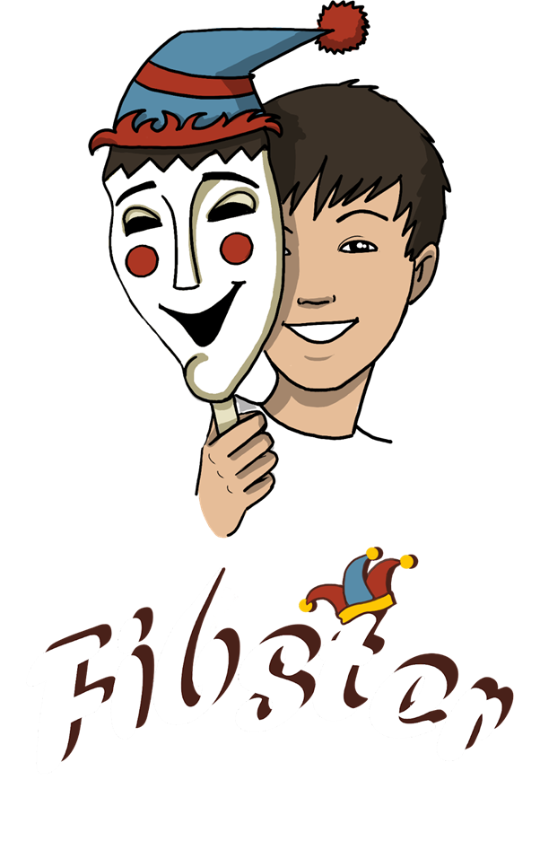

My Portfolio
FourthWall
At FourthWall I've been working on creating games for web and mobile as lead designer while trying to leverage our company's advanced facial and hand tracking software.
Fibster
Fibster is a social deduction game where every player is lying.
Each round a theme is given and one player at random is given a card with an image matching the theme. The rest are blank. All players with blank cards must convince the others that their card has an image matching the round theme. The player with the actual image wants to convince the others his card is blank. We used our facial tracking software to give player avatars, to allow complete strangers to play a social game. Here's a link to our trailer.
SNU

SNU is a 1v1 game where players control balls fighting in a dome over a single point to capture and bring back to their base. Players control the ball by moving their hand and have a number of power ups to sabotage their opponent. Here's a link to one of our gameplay tests.
Personal
These are my personal projects.
Articles

I've been reaching out to interview different developers on their games and what we can learn from them. I wrote an article about toxicity in games interviewed Mikkel Pederson the Co-Founder and Lead Designer of Ghost Ship Games (Deep Rock Galactic) about their systems of reducing toxicity. I've also just finished an interview with Chris Bourassa Co-Founder and Creative Director of Red Hook Games (Darkest Dungeon 1 & 2) about the unique challenge they faced when making a sequel that was of a different genre. I'll be uploading the article soon.
I'm Happy But

In this game I really want to connect the feeling of failure in a videogame to the feeling of failure of completing everyday tasks as a result of depression. The player has everyday tasks to complete, represented by minigames. There are many scripted, yet surprising failures in these minigames and as the player fails he's laughed at by his personified depression. I used UE4 and C++ for this project.
Sleepy Farmer

Sleepy Farmer is a tile base resource management game. I started working on it as a way to practice managing an economy in game. To not make it the same monotonous farmville I added a twist. The player only has a few days to decide how the farm will be run, then they fall asleep for the rest of the season. They're then forced to watch the consequences of their decisions as the farm plays out and various positive or negative events occur. I used UE4 and C++ for this project.
Lost Projects
My first two projects made in Unity using C# which I sadly lost due to not backing up my computer.
Frogger Clone

A very simple frogger clone, I played a little with the varying the speed of different lanes to add to difficulty.
Jumpman who is a man and not a block

My first ever game. A simple platformer I made following a course piece by piece. I messed with moving platforms and hiding "gems" across levels. I also made a final level where I went a tad overboard and tried to make it as hard as possible mainly through the use of fast moving obstacles. I no longer have the source code, but the last version of the game is in my google drive here.